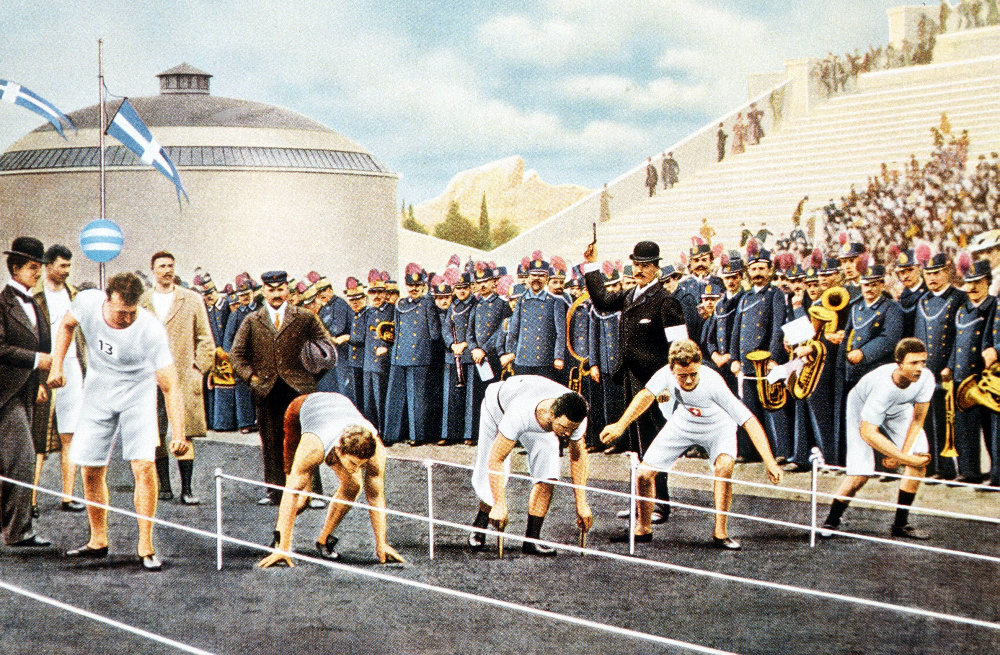
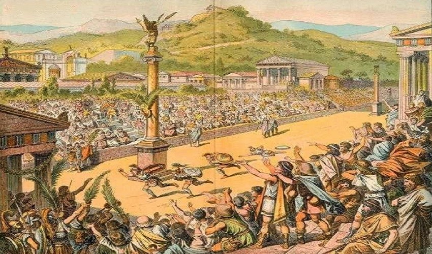

What is Olympics?
The Olympics are international multi-sport events held every four years, celebrating athletic excellence, cultural exchange, and global cooperation.
Overview: The Olympic Games are the world’s foremost sporting competitions, featuring athletes from over 200 nations competing in a wide range of sports. They are organized in two main editions: the Summer Olympics and the Winter Olympics, each held every four years, with the schedule staggered so that an Olympic Games occurs every two years. The Games are governed by the International Olympic Committee (IOC), which selects host cities, determines the sports program, and oversees the Olympic Charter.
History Of Olympics
The history of the Olympics dates back to ancient Greece, where the Games were held every four years in Olympia. They were revived in the late 19th century, with the first modern Olympic Games taking place in Athens in 1896. The International Olympic Committee (IOC) was founded in 1894 by Baron Pierre de Coubertin, leading to the establishment of the Olympic Movement. The Games have evolved over the years, introducing new sports and events, and have been held in various locations worldwide, alternating between Summer and Winter Games since 1994. The next Olympic Games will be held in Los Angeles in 2028 and in Milano Cortina in 2030.
How many countries participate in Olympics
As of the 2024 Paris Olympics, there are 206 countries participating in the Games. This includes all current National Olympic Committees (NOCs) that have been involved in at least two editions of the Olympic Games.


